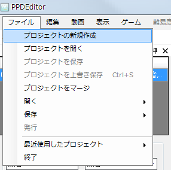
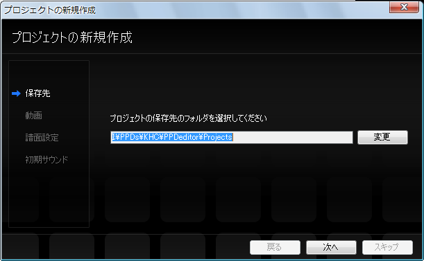
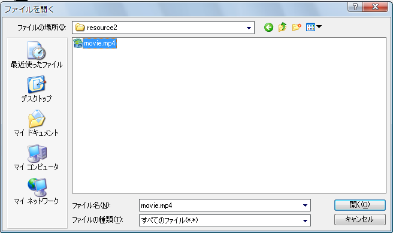
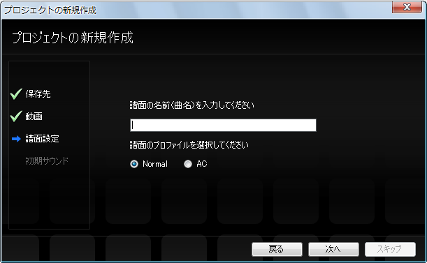

首先，準備好要使用的視頻。（這裡假設文件名為movie.mp4）
啟動PPDEditor，選擇 文件→打開→新建工程。

隨後會顯示新建工程對話框，按照對話框進行設置。
首先，選擇工程的保存位置。通常保持默認即可，直接點擊下一步按鈕。

接下來，選擇要使用的視頻。
點擊更改按鈕會顯示對話框，移動到保存movie.mp4的文件夾，選擇movie.mp4後點擊確定。


接下來，設置譜面的名稱和配置。
譜面名稱請輸入曲名（如果有更容易理解的名稱也可以加上）。
譜面配置中，如果想做成AC風格請選擇AC（不知道AC是什麼的話選擇Normal即可）。
（※創建工程後也可以更改）

接下來設置初始音效。
通常使用默認顯示的音效（鈴鼓的聲音）即可。
（※創建工程後也可以更改）

點擊完成按鈕。

試著播放、暫停視頻吧。
首先，讓時間軸（或遊戲窗口）獲得焦點（變成灰色即表示已獲得焦點）。

在時間軸（或遊戲窗口）獲得焦點的狀態下按空格鍵，
即可在播放和暫停之間切換。
另外，也可以從菜單欄進行播放、暫停和停止。

接下來，進行譜面的初始設置。
下一步